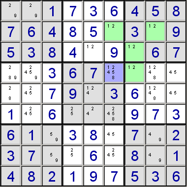

This technique is a combination of naked pairs and colouring, and is a special case of XY-chains. It's often easier for a human to spot than an XY chain.
Consider the following puzzle:

Consider the chain of cells r2c6, r2c8, r3c7 and r4c7. We notice that
if r2c6 is 1 then r2c8 is 2, so r3c7 is 1, so r4c7 is 2.
and
if r2c6 is 2 then r2c8 is 1, so r3c7 is 2, so r4c7 is 1.
So, in a similar manner to simple colouring and XY chains, we can be sure that any cells that share units with both r2c6 and r4c7 cannot be 1 or 2. So in this example, we can eliminate 1 and 2 from the candidates for r4c6.
Note: the chain must contain an even number of cells or else elimination is not possible. For example, consider the chain r2c8, r3c7 and r4c7. You might think that these would allow elimination of 1 and 2 in r5c8, but this is not the case. If r2c8 is 1, so is r4c7, and if r2c8 is 2, so is r4c7. All we know is that both cells contain the same number, but not which one it is. We cannot make any elimination to r5c8.